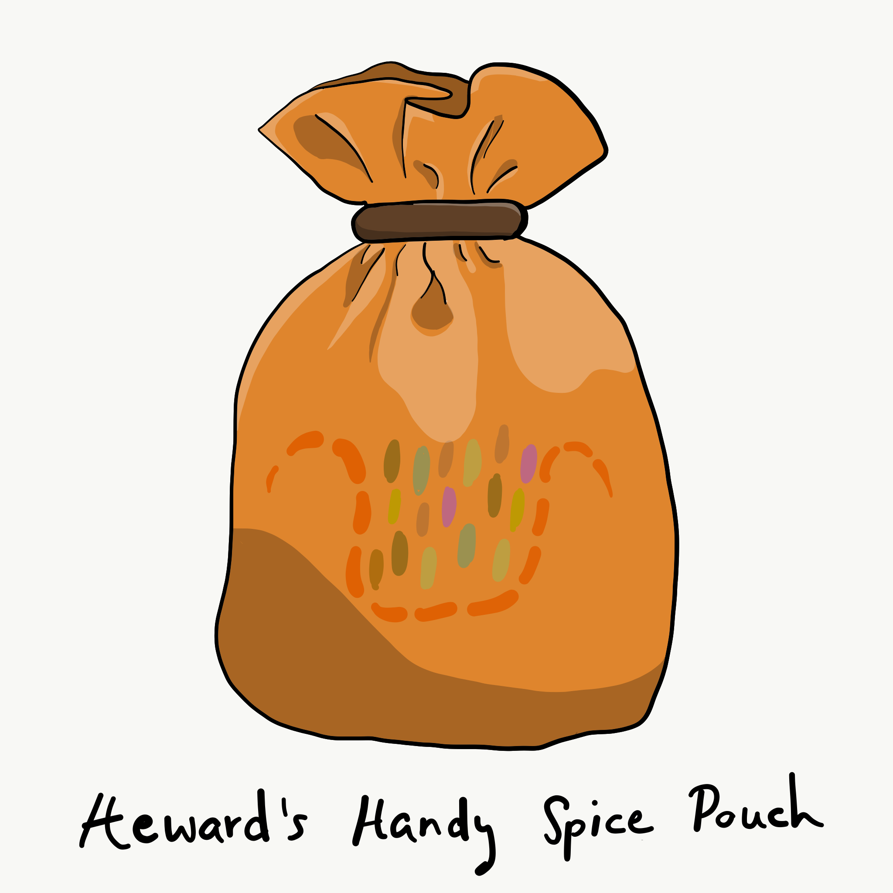
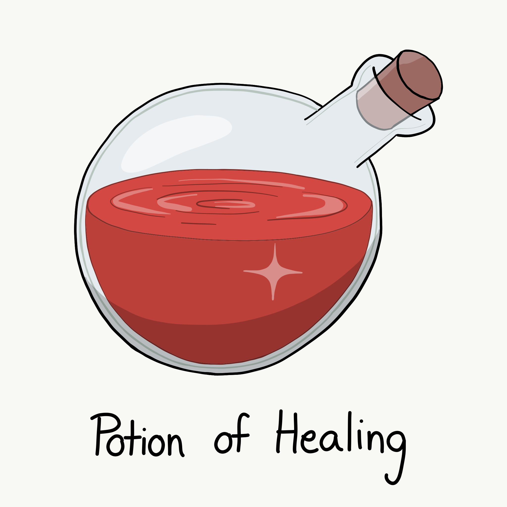
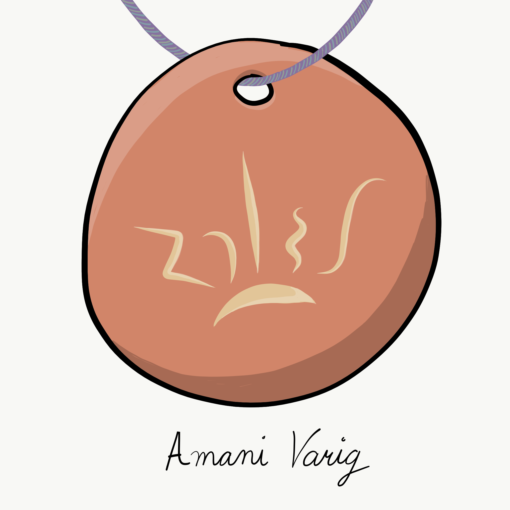
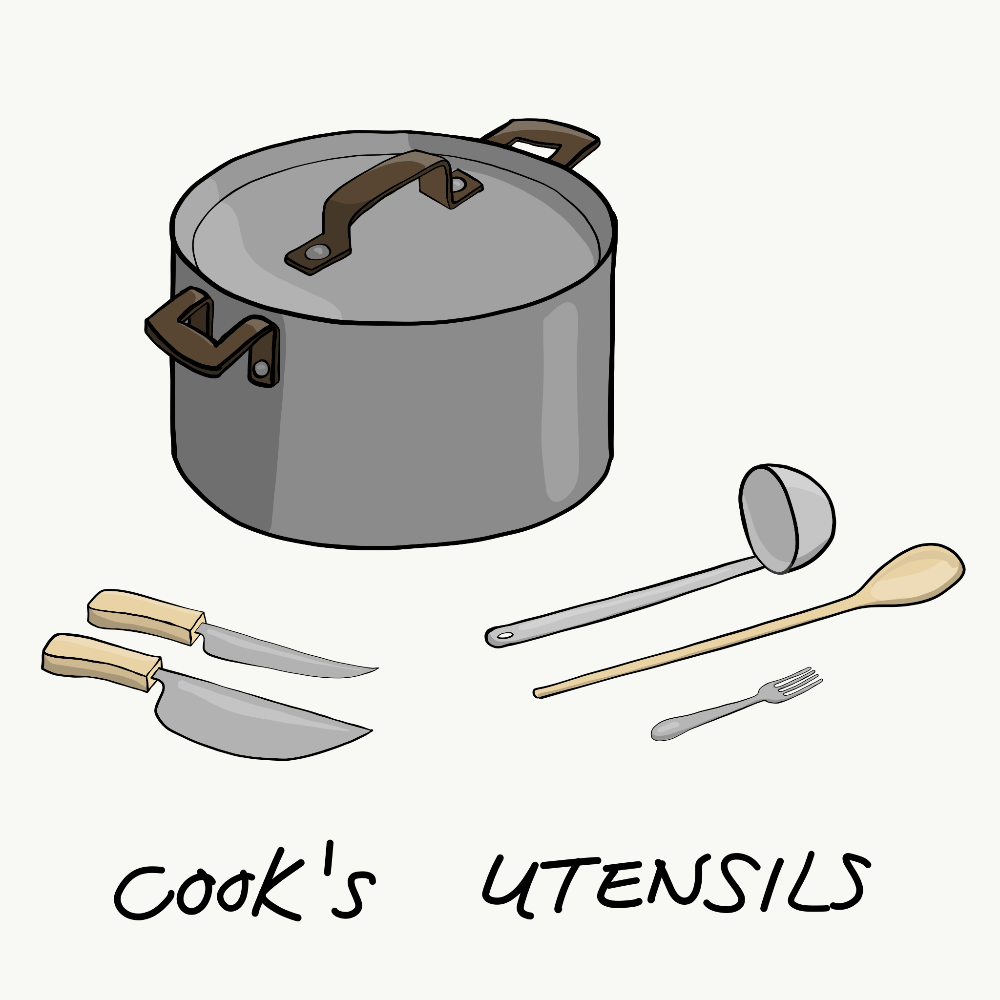
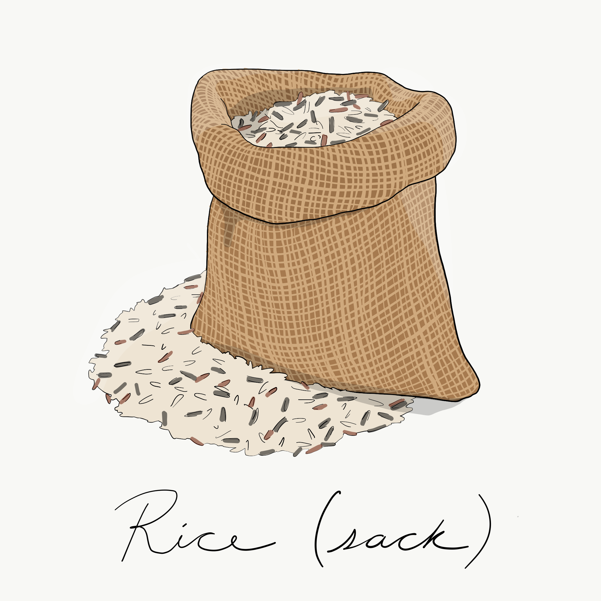
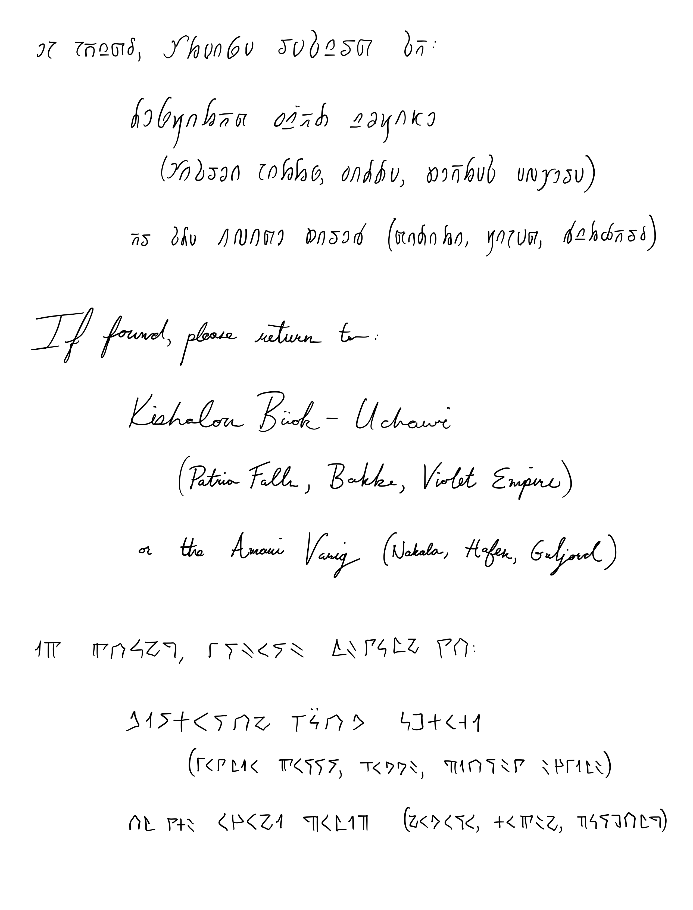
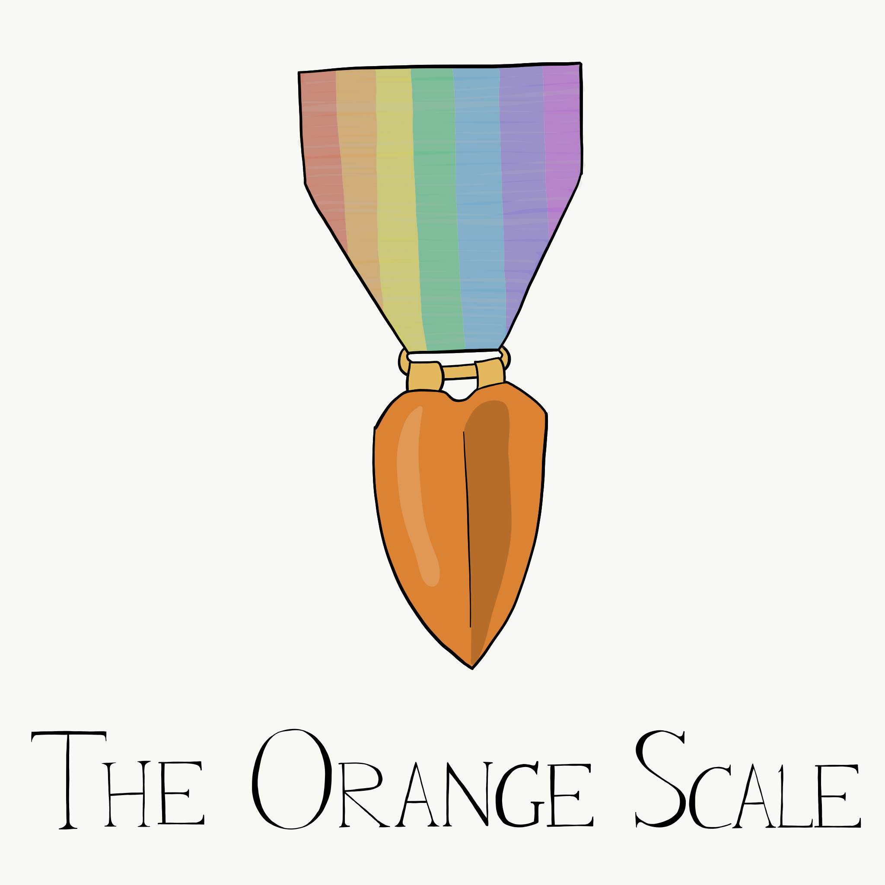
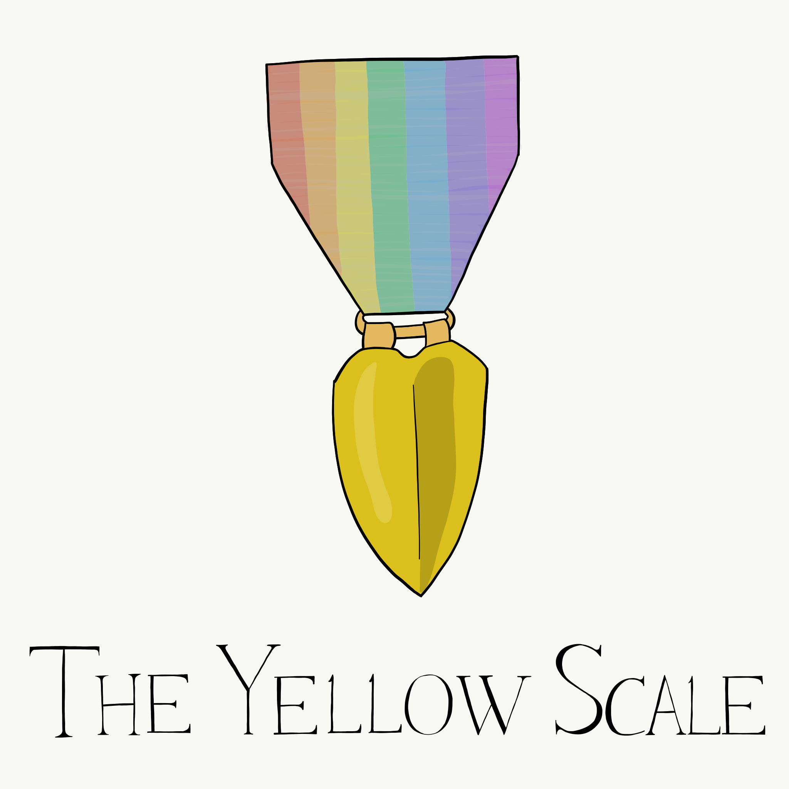

Weight carried: 23.3
Unencumbered
Gold: 24, Silver: 7, Copper: 10
| Item | Weight | Quantity | Location |
|---|
| Treant-Heart Staff | 4.0 lb. | 1 | Carrying |
Magic weapon (quarterstaff), rare (requires attunement)
This magical quarterstaff has been imbued with the heart of a treant, giving it many powers. As an action, an attuned wielder of the staff can speak one of the Sylvan command words to change the staff's form:
An attuned user can access the staff's innate magical properties. The staff has a maximum number of charges equal to your proficiency bonus. At dawn, it regains a number of charges equal to half your proficiency bonus (rounded up).
Spells. You can use an action to expend 1 or more of the staff's charges to cast one of the following spells from it, using Wisdom as your spellcasting ability: animal friendship (1 charge), awaken (5 charges), barkskin (2 charges), locate animals or plants (2 charges), speak with animals (1 charge), speak with plants (3 charges), or wall of thorns (6 charges).
Tree Form. You can use an action to plant one end of the staff in fertile earth and expend 1 charge to transform the staff into a healthy tree. The tree is 60 feet tall and has a 5-foot-diameter trunk, and its branches at the top spread out in a 20-foot radius. If there is not enough space for the tree to grow to its full dimensions, then the transformation fails, and the action and charge are both wasted. The tree appears ordinary but radiates a faint aura of transmutation magic if targeted by detect magic. While touching the tree and using another action to speak its command word (sanya), you return the staff to its normal form. Any creature in the tree falls when it reverts to a staff.
| Dagger (+2) | 1.0 lb. | 1 | On Belt |
Ranged attack (20ft./60ft.): 1d4+4 piercing
| Darts | 2.5 lb. | 10 | On Belt |
Ranged attack (20ft./60ft.): 1d4+4 piercing
| Wand of Web | 0.0 lb. | 1 | On Belt |
Charges left: 1
This wand has 7 charges. While holding it, you can use an action to expend 1 of its charges to cast the web spell (save DC 15) from it.
If you expend the wand's last charge, roll a d20. On a 1, the wand crumbles into ashes and is destroyed.
| Healer's Kit | 3.0 lb. | 1 | On Belt |
This kit is a leather pouch containing bandages, salves, and splints. The kit has ten uses total. As an action, you can expend one use of the kit to stabilize a creature that has 0 hit points, without needing to make a Wisdom (Medicine) check.
As part of a long rest, you can use your Cook's Utensils to recharge a Healer's Kit by 1d4+1 charges. You must cook a meal to do this. A number times between periods of downtime equal to Wisdom score - 10 + Proficiency (9), you can do one of the following with a Healer's Kit that you've charged up by cooking:
These spells don't count as Casting a Spell: it's not magic, just good food. You recharge a use of this feature by spending a week working at the Curry Kitchen or Sally's Soup Kitchen.
| Heward's Handy Spice Pouch | 0.0 lb. | 1 | On Belt |
This belt pouch appears empty and has 10 charges. While holding the pouch, you can use an action to expend 1 of its charges, speak the name of any nonmagical food seasoning (such as salt, pepper, saffron, or cilantro), and remove a pinch of the desired seasoning from the pouch. A pinch is enough to season a single meal. The pouch regains 1d6 + 4 expended charges daily at dawn.

| Potion of Healing | 1.0 lb. | 2 | On Belt |
A character who drinks the magical red fluid in this vial regains 2d4 + 2 hit points. Drinking or administering a potion takes an action.

| Coin Pouch | 1.8 lb. | 1 | On Belt |
This cloth pouch can hold 1/5 cubic foot/6 pounds of coins. Currently it is holding 24 gp, 7 sp, and 10 cp (coin weight of 0.8200000000000001 lb.).
| Boots of Elvenkind | 2.0 lb. | 1 | Wearing |
While you wear these boots, your steps make no sound, regardless of the surface you are moving across. You also have advantage on Dexterity (Stealth) checks that rely on moving silently.
| Cloak of Elvenkind | 4.0 lb. | 1 | Wearing |
While you wear this cloak with its hood up, Wisdom (Perception) checks made to see you have disadvantage, and you have advantage on Dexterity (Stealth) checks made to hide, as the cloak's color shifts to camouflage you. Pulling the hood up or down requires an action.
| Clothes, Mtawa robes | 4.0 lb. | 1 | Wearing |
These are simple traditional robes of the Mtawa. Holsters for two flasks and 10 darts, as well as other things (pouches, Shanga beads) may be tied to the Holster in belt.
| Amani Verig Pendant | 0.0 lb. | 1 | Wearing |
On a string hangs a smooth stone with a simple symbol carved into it.

| Shanga Beads | 0.0 lb. | 1 | Wearing |
Twenty hand-painted wooden counting beads are attached at one end to a hand-woven string. These are used in the daily Nidhamu ritual, and are otherwise tied at the waist.
| Item | Weight | Quantity | Location |
|---|
| ☆ Backpack [container] | 5.0 lb. | -- | Inn |
Toggle container description
Contains 0.0 lb. of items (max: 30 lb.)
A backpack is a leather pack carried on the back, typically with straps to secure it. A backpack can hold 1 cubic foot/ 30 pounds of gear.
You can also strap items, such as a bedroll or a coil of rope, to the outside of a backpack.
| Cook's Utensils | 8.0 lb. | 1 | Backpack |
Cook's utensils include a metal pot, knives, forks, a stirring spoon, and a ladle. Proficiency with Cook's Utensils lets you add your proficiency bonus to any ability checks you make using these tools.

| Mess Kit | 1.0 lb. | 1 | Backpack |
This tin box contains a cup and simple cutlery. The box clamps together, and one side can be used as a cooking pan and the other as a plate or shallow bowl.
| Oil (bottle) | 1.0 lb. | 1 | Backpack |
This metal tankard holds 1 pint of oil. As an action, you can splash the oil in this flask onto a creature within 5 feet of you. Make a ranged attack against a target creature or object, treating the oil as an improvised weapon. On a hit, the target is covered in oil. If the target takes any fire damage before the oil dries (after 1 minute), the target takes an additional 5 fire damage from the burning oil. You can also pour a flask of oil on the ground to cover a 5-foot-square area, provided that the surface is level. If lit, the oil burns for 2 rounds and deals 5 fire damage to any creature that enters the area or ends its turn in the area. A creature can take this damage only once per turn.
| Honey (jar) | 1.0 lb. | 1 | Backpack |
A ceramic jar filled with about 8 ounces of delicious honey. The jar has a protective holster.
| Nuts | 0.5 lb. | 1 | Backpack |
This pouch is filled with a mixture of walnuts, hazelnuts, and chestnuts.
| Dried Fruit | 0.5 lb. | 1 | Backpack |
This pouch is filled with dried cranberries and blueberries.
| Tinderbox | 1.0 lb. | 1 | Backpack |
This small container holds flint, fire steel, and tinder (usually dry cloth soaked in light oil) used to kindle a fire. Using it to light a torch -- or anything else with abundant, exposed fuel -- takes an action. Lighting any other fire takes 1 minute.
| Torch | 1.0 lb. | 1 | Backpack |
A torch burns for 1 hour, providing bright light in a 20-foot radius and dim light for an additional 20 feet. If you make a melee attack with a burning torch and hit, it deals 1 fire damage.
| Waterskin | 5.0 lb. | 1 | Backpack |
A waterskin can hold 4 pints of liquid.
| Bedroll | 7.0 lb. | 1 | Inn, on Backpack |
You never know where you're going to sleep, and a bedroll helps you get better sleep in a hayloft or on the cold ground. A bedroll consists of bedding and a blanket thin enough to be rolled up and tied. In an emergency, it can double as a stretcher.
| Rope with a Grappling Hook | 5.0 lb. | 1 | Inn, on Backpack |
Silk rope has 2 hit points and can be burst with a DC 17 Strength check. This rope is 50 feet long and has a grappling hook tied to one end, which can secure the rope to a battlement, window ledge, tree limb, or other protrusion.
| Alchemy Jug | 12.0 lb. | 1 | Wildcat Tower |
This ceramic jug appears to be able to hold a gallon of liquid and weighs 12 pounds whether full or empty. Sloshing sounds can be heard from within the jug when it is shaken, even if the jug is empty.
You can use an action and name one liquid from the table below to cause the jug to produce the chosen liquid. Afterward, you can uncork the jug as an action and pour that liquid out, up to 2 gallons per minute. The maximum amount of liquid the jug can produce depends on the liquid you named.
Once the jug starts producing a liquid, it can't produce a different one, or more of one that has reached its maximum, until the next dawn.
| Liquid | Max Amount |
|---|---|
| Acid | 8 ounces |
| Basic poison | 1/2 ounce |
| Beer | 4 gallons |
| Honey | 1 gallon |
| Maynnaise | 2 gallons |
| Oil | 1 quart |
| Vinegar | 2 gallons |
| Water, fresh | 8 gallons |
| Water, salt | 12 gallons |
| Wine | 1 gallon |
| Cook's Utensils (home set) | 8.0 lb. | 1 | Wildcat Tower |
Cook's utensils include a metal pot, knives, forks, a stirring spoon, and a ladle. Proficiency with Cook's Utensils lets you add your proficiency bonus to any ability checks you make using these tools.
| Rice (sack) | 4.0 lb. | 1 | Wildcat Tower |
This sack holds 4 pounds (10 cups) of wild rice. Each cup of uncooked wild rice expands to about 3.5 cups when cooked.

| Herbalism Kit | 3.0 lb. | 1 | Wildcat Tower |
This kit contains a variety of instruments such as clippers, mortar and pestle, and pouches and vials used by herbalists to create remedies and potions. Proficiency with this kit lets you add your proficiency bonus to any ability checks you make to identify or apply herbs. Also, proficiency with this kit is required to create antitoxin and any potion of healing.
| Poisoner's Kit | 2.0 lb. | 1 | Wildcat Tower |
A poisoner's kit includes the vials, chemicals, and other equipment necessary for the creation of poisons. Proficiency with this kit lets you add your proficiency bonus to any ability checks you make to craft or use poisons.
| Journal | 5.0 lb. | 1 | Wildcat Tower |
This journal contains Kisha's written record of the journey portion of her adept defense, essentially her adventures with the Wildcats since leaving Luostari. Most pages with writing have been filled with small, neat cursive and are written in Common. The inside cover says in Elivsh, Common and Dwarvish:

| Orange Scale Medal | 0.0 lb. | 1 | Wildcat Tower |
Awarded by Lucretia, an ancient Roman orange dragon, for saving Bakke and the Empire at large from Cornelia's devastation orbs.

| Yellow Scale Medal | 0.0 lb. | 1 | Wildcat Tower |
Awarded by the govenor of Bakke for saving Bakke and the Empire at large from Cornelia's devastation orbs.
